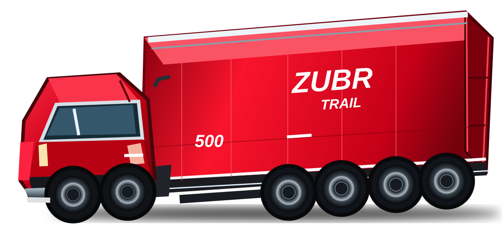

Новые материалы о модельном ряде
Подробные фото, комплектации и конструктивные решения.

Надёжные и эффективные решения для перевозки различных грузов


Полный цикл: от проектирования до готового полуприцепа
▶ Узнать о производствеЗапуски моделей, события, технологии и материалы о работе техники. Раздел готов к публикации подтверждённых новостей.
Подробные фото, комплектации и конструктивные решения.
Рассказы о конструкциях полуприцепов и важных инженерных деталях.
Материалы и примеры использования техники на реальных маршрутах.
Оцените возможности полуприцепов ZUBR TRAIL. Оставьте контакты и укажите интересующую модель.
В текущей демонстрационной версии форма не передаёт персональные данные на сервер. Для реальных заявок требуется подключение обработчика и политики персональных данных.
Беларусь, г. Бобруйск
Контакты отдела продаж и реквизиты бренда будут опубликованы после согласования.
Выберите модель или оставьте запрос на демонстрацию. Наши специалисты помогут подобрать подходящую комплектацию после подключения каналов связи.
Перейти к модельному ряду →Показатели относятся к указанному исполнению и требуют подтверждения комплектации перед заключением договора.
Запросить тест-драйв →